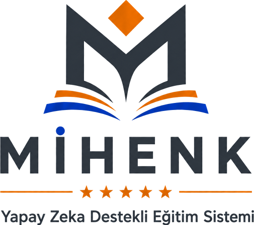

Sisteme giriş yapmak için tıklayınız
→
Lütfen giriş yapmak istediğiniz paneli seçiniz
T3
Mihenk
Yapay zekâ önerir, öğretmen karar verir.
Demo Akışı
Sıfırla
Bu prototip beş rolü aynı tarayıcı oturumunda simüle eder. Veriler yalnızca bu tarayıcıda saklanır.
Takım
BIES
— Esat Talha Karataş · İrem Yazıcı · Zeynep Sude Demir · Burak Özçelik
T3 Vakfı Bursiyer Yapay Zekâ Creathon 2026 · Problem 2